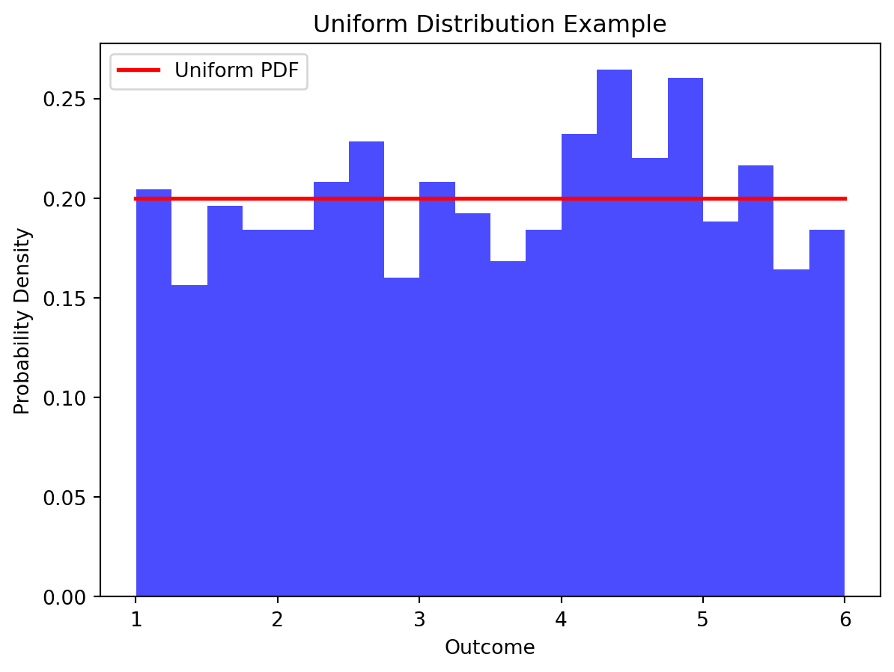
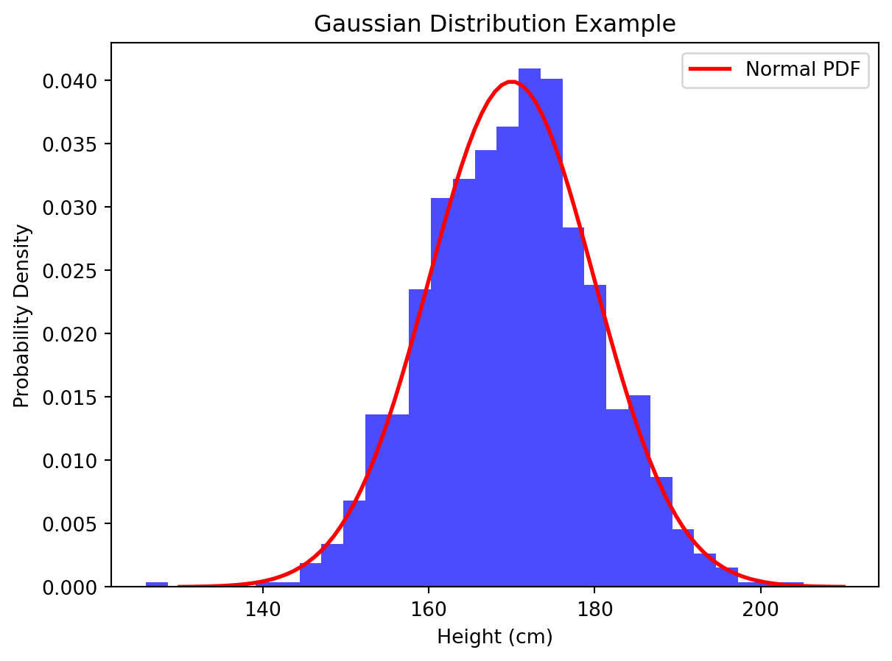
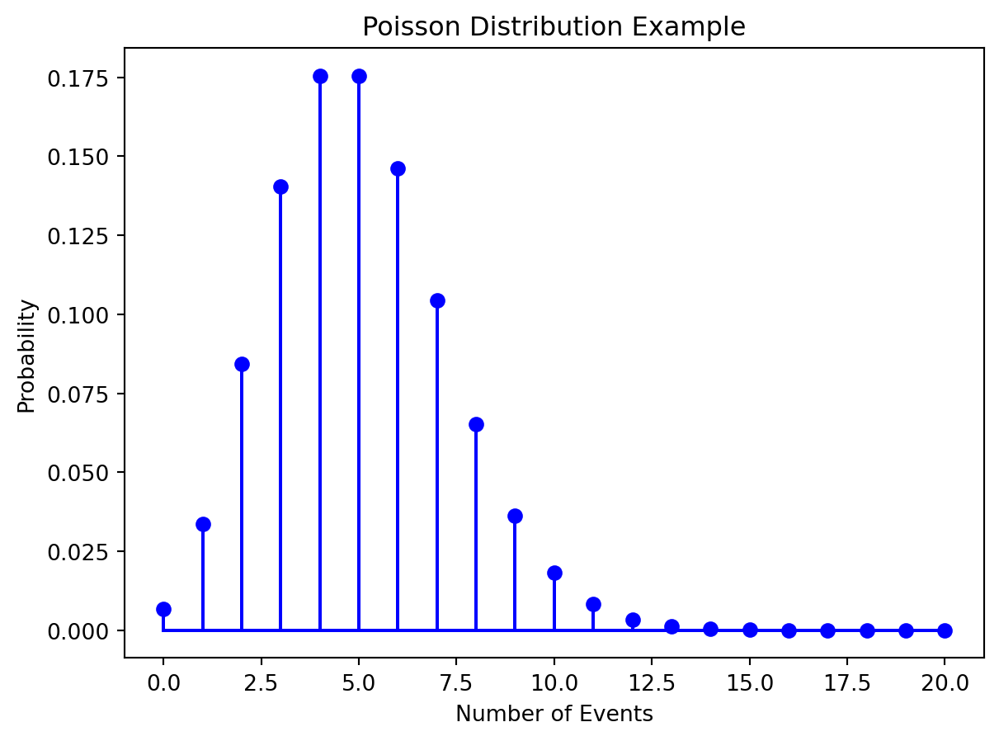
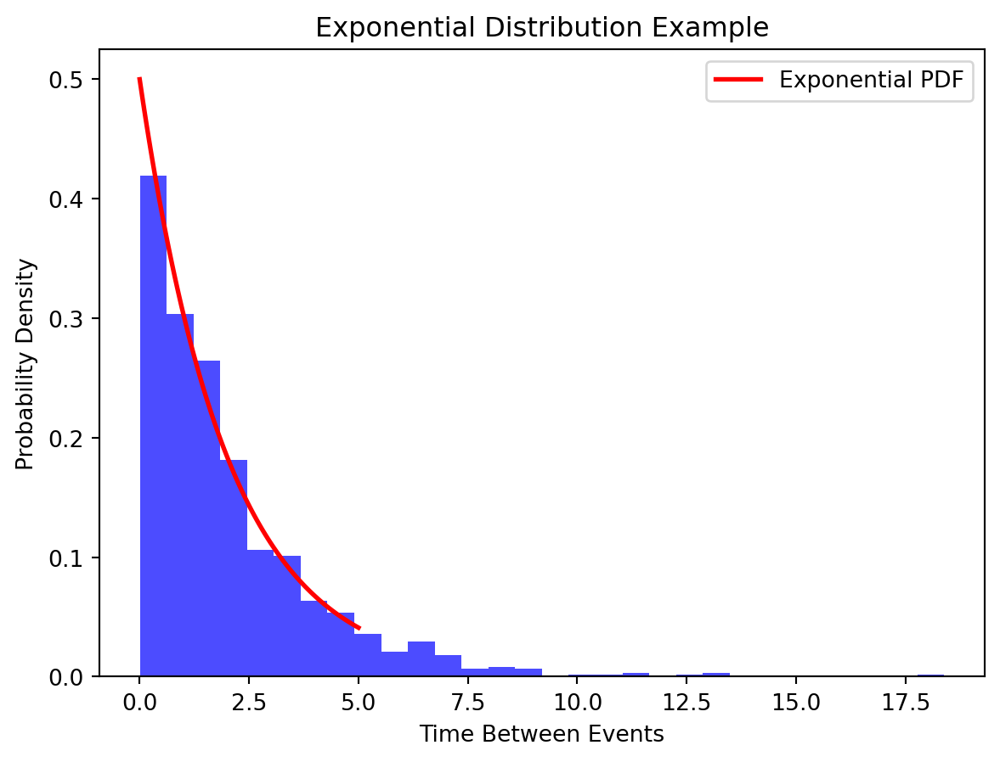

In the tapestry of our daily experiences, uncertainty weaves its intricate threads, creating a landscape where the unknown is an ever-present companion. From deciding whether to carry an umbrella to predicting stock market trends, uncertainty surrounds us, shaping our decisions, actions, and perceptions. It is this pervasive uncertainty that beckons us to explore the realm of probability theory, a powerful tool that empowers us to navigate the unpredictable nature of the world.
Enter probability theory, a mathematical framework designed to bring order to the chaos of uncertainty. Probability theory provides us with a systematic way to quantify and analyze uncertainty, offering a language to express the likelihood of different outcomes. It serves as a compass, guiding us through the fog of unpredictability and enabling us to make informed decisions in the face of ambiguity.
At its core, probability theory explores the likelihood of events occurring in various situations. It equips us with the means to assign numerical values to the uncertainty inherent in any scenario, allowing us to make reasoned predictions and choices. Whether predicting the outcome of a dice roll or estimating the probability of a rare disease occurrence, probability theory provides the analytical tools essential for decision-making in uncertain environments.
In the following exploration of probability theory and random variables, we will unravel the intricacies of this indispensable field, delving into its fundamental concepts, applications in real life, and the ways it shapes our understanding of uncertainty. Join us on this journey as we unveil the mathematical underpinnings that empower us to confront the unpredictable with confidence and insight.
Probability Theory
Probability is a measure of the likelihood that a particular event will occur. In the context of probability theory, we assign a numerical value between 0 and 1 to represent the probability of an event. A probability of 0 indicates that the event will not occur, while a probability of 1 signifies certainty that the event will occur. For events between these extremes, the probability reflects the degree of likelihood.
The foundation of probability theory lies in understanding the set of all possible outcomes of an experiment, known as the sample space. The sample space, often denoted by a random S, encompasses every conceivable outcome of a random process. For instance, when rolling a six-sided die, the sample space is {1, 2, 3, 4, 5, 6}. Understanding the sample space is crucial for defining and calculating probabilities.
An event is a subset of the sample space, representing a specific outcome or a combination of outcomes. Events are denoted by letters such as A, B, or C. For example, when rolling a die, the event of getting an even number can be denoted as A = {2,4,6}. Events can be simple (a single outcome) or compound (a combination of outcomes).
Key Probability Rules
1. Probability of any Event: The probability of an event A in the sample space S, P(A) cannot be negative or more than 1. The probability of all the events in the sample space S adds to 1.
P(A) ≥ 0
P(A) ≤ 1
P(S) = 1
2. Addition Rule: The addition rule is a fundamental concept that deals with the probability of the union of two or more events. For two events A and B, the probability of their union (A ∪ B) is given by:
P(A ∪ B) = P(A) + P(B) − P(A ∩ B)
This formula accounts for the overlap between events A and B to avoid double-counting. The probability of the intersection P(A∩B) is subtracted to ensure accuracy.
3. Bayes Rule: The multiplication rule governs the probability of the intersection of two events. For two events A and B, the probability of their intersection (A∩B) is given by:
P(A ∩ B) = P(A)⋅P(B∣A)
Here, P(B∣A) represents the conditional probability of event B occurring given that event A has occurred. It expresses the probability of B within the context of A.
4. Independence Rule: Two events, A and B, are considered independent if the occurrence (or non-occurrence) of one event has no influence on the probability of the other event.
P(A ∩ B) = P(A)⋅P(B)
P(A∣B) = P(A) and P(B∣A) = P(B)
These fundamental probability rules lay the groundwork for more complex probability calculations, enabling us to analyze and predict the likelihood of various outcomes in uncertain scenarios. They are essential tools for decision-making and risk assessment in diverse fields, from statistics to finance and beyond.
Types of Probability
Probability comes in various forms, each serving a specific purpose in different contexts. Here are three types of probability: classical, empirical, and subjective, along with real-world examples to illustrate each:
Classical Probability
Classical probability is based on equally likely outcomes in a sample space. It assumes that each outcome in the sample space is equally likely to occur.
Example: Consider a fair coin. The sample space is {Heads, Tails}, and since the coin is fair, each outcome is equally likely. The probability of getting Heads or Tails is 0.5 or 50%.
Empircal Probability
Empirical probability is based on observed data. It involves calculating the probability of an event by analyzing data collected from actual experiments or observations.
Example: Suppose you want to know the probability of rain in a particular city. Empirical probability would involve collecting data over time, noting the days with rain, and calculating the ratio of rainy days to the total number of days. If it rained on 30 out of 90 days, the empirical probability would be 0.333 or approximately 33.3%.
Subjective Probability
Subjective probability is based on personal judgment, beliefs, or opinions. It reflects an individual’s subjective assessment of the likelihood of an event.
Example: A doctor might assign a subjective probability to the likelihood of a patient having a particular illness based on their experience, knowledge, and the patient’s symptoms. This probability is subjective and varies from one medical professional to another.
Random Variables
A random variable is a mathematical function that assigns a real number to each outcome in the sample space of a random experiment. In simpler terms, it is a variable whose value is subject to variations due to chance or randomness. Random variables are used to model and quantify uncertainty in various situations.
Random variables play a crucial role in modeling uncertain quantities by providing a way to represent and analyze the variability inherent in random processes. They allow us to attach numerical values to outcomes of interest, facilitating the application of mathematical and statistical methods to describe, analyze, and make predictions about uncertain events.
Discrete Random Variable
Discrete random variables take values on a finite or countably infinite subset of R such as the integers. They are used to model discrete numerical quantities: the outcome of the roll of a die, the score in a basketball game, etc.
Continuous Random Variables
A continuous random variable is one that can take any value within a given range or interval. They are used to model quantities like: the height of a randomly selected person, the temperature at a specific location, etc.
Probability Distributions
In probability theory, a probability distribution describes the likelihood of various outcomes in a sample space. It provides a way to model and analyze uncertainty by assigning probabilities to different events. Probability distributions are fundamental tools in probability theory, offering insights into the nature of random variables and helping us make predictions about their behavior. Probability distributions help quantify the uncertainty associated with different outcomes of a random variable. They provide a systematic way to express the likelihood of each possible value.
Probability distributions form the basis for statistical inference. They allow us to make predictions about the population based on a sample and make informed decisions under uncertainty. Probability distributions are used to model various random processes in diverse fields such as physics, finance, biology, and engineering. They provide a mathematical framework to describe the probabilistic nature of real-world phenomena.
Uniform Distribution
The uniform distribution is characterized by all outcomes being equally likely. Each value within a specified range has the same probability of occurring. The probability density function (PDF) for a continuous uniform distribution over the interval [a,b] is given by:
f(x)= 1/b−a for a ≤ x ≤ b
Consider the example of rolling a fair six-sided die. Each face of the die has an equal chance of landing face up. If we assume the die is unbiased, the outcome of each roll follows a uniform distribution over the discrete values {1,2,3,4,5,6}. Each number has a probability of 1/6 of occurring.
import numpy as npimport matplotlib.pyplot as pltfrom scipy.stats import uniform# Define the range [a, b]a =1b =6# Generate a sample of 1000 values from a uniform distributionsample = uniform.rvs(loc=a, scale=b-a, size=1000)# Plot the histogram of the sampleplt.hist(sample, bins=20, density=True, alpha=0.7, color='blue')# Plot the probability density function (PDF)x = np.linspace(a, b, 100)plt.plot(x, uniform.pdf(x, loc=a, scale=b-a), 'r-', lw=2, label='Uniform PDF')# Add labels and a legendplt.xlabel('Outcome')plt.ylabel('Probability Density')plt.title('Uniform Distribution Example')plt.legend()# Show the plotplt.show()

Binomial Distribution
The binomial distribution models the number of successes in a fixed number of independent and identically distributed Bernoulli trials, where each trial has only two possible outcomes (usually termed as “success” and “failure”). The probability mass function (PMF) of a binomial distribution is given by:
P(X=k)=( n_p_k ) p^k (1-p)^(n-k)
where: n is the number of trials, k is the number of successes, p is the probability of success on a single trial, and (1−p) is the probability of failure on a single trial.
Consider the example of flipping a biased coin. Let’s say you have a coin that has a 60% chance of landing heads (success) and a 40% chance of landing tails (failure). If you flip this coin 5 times, you can model the number of heads obtained using a binomial distribution.
import numpy as npimport matplotlib.pyplot as pltfrom scipy.stats import binom# Define parametersn_trials =5# Number of coin flipsp_success =0.6# Probability of getting heads# Generate possible outcomes (0 to n_trials)x = np.arange(0, n_trials+1)# Calculate binomial probabilities for each outcomebinomial_pmf = binom.pmf(x, n_trials, p_success)# Plot the probability mass function (PMF)plt.stem(x, binomial_pmf, basefmt='b-', linefmt='b-', markerfmt='bo')plt.title('Binomial Distribution Example')plt.xlabel('Number of Heads')plt.ylabel('Probability')plt.show()
Gaussian Distribution
The Gaussian distribution, also known as the normal distribution, is a continuous probability distribution that is symmetric around its mean. It is characterized by its bell-shaped curve. The probability density function (PDF) of a normal distribution is given by:
f(x;μ,σ)= 1/σroot(2π) e -1/3(x-mu)/sigma^2
where: μ is the mean, σ is the standard deviation
import numpy as npimport matplotlib.pyplot as pltfrom scipy.stats import norm# Define parametersmean_height =170# Mean height in centimetersstd_deviation =10# Standard deviation in centimeters# Generate a sample of 1000 values from a normal distributionsample = np.random.normal(mean_height, std_deviation, 1000)# Plot the histogram of the sampleplt.hist(sample, bins=30, density=True, alpha=0.7, color='blue')# Plot the probability density function (PDF)x = np.linspace(mean_height -4*std_deviation, mean_height +4*std_deviation, 100)plt.plot(x, norm.pdf(x, mean_height, std_deviation), 'r-', lw=2, label='Normal PDF')# Add labels and a legendplt.xlabel('Height (cm)')plt.ylabel('Probability Density')plt.title('Gaussian Distribution Example')plt.legend()# Show the plotplt.show()

Poisson Distribution
The Poisson distribution models the number of events that occur in a fixed interval of time or space. It is often used for rare events with a known average rate of occurrence. The probability mass function (PMF) of a Poisson distribution is given by:
Insert formula
Insert defining elements
Consider a scenario where you are observing the number of customer arrivals at a store in a given hour, and you know that, on average, 5 customers arrive per hour. The Poisson distribution can be used to model the probability of observing a specific number of customer arrivals in that hour.
import numpy as npimport matplotlib.pyplot as pltfrom scipy.stats import poisson# Define parameteraverage_rate =5# Average number of events per interval# Generate possible outcomes (0 to 20 events)x = np.arange(0, 21)# Calculate Poisson probabilities for each outcomepoisson_pmf = poisson.pmf(x, average_rate)# Plot the probability mass function (PMF)plt.stem(x, poisson_pmf, basefmt='b-', linefmt='b-', markerfmt='bo')plt.title('Poisson Distribution Example')plt.xlabel('Number of Events')plt.ylabel('Probability')plt.show()

Exponential Distribution
The exponential distribution models the time between events in a Poisson process, where events occur continuously and independently at a constant average rate. It is characterized by its memoryless property, meaning that the probability of an event occurring in the next time unit is independent of the past. The probability density function (PDF) of an exponential distribution is given by:
Insert formula
Define elements
Consider a scenario where customers arrive at a service point, and the time between successive arrivals follows an exponential distribution. This can be applied to model the inter-arrival times in a queue, the time between calls at a call center, or the time between arrivals of buses at a bus stop.
import numpy as npimport matplotlib.pyplot as pltfrom scipy.stats import expon# Define parameterrate_parameter =0.5# Average number of events per unit time# Generate a sample of 1000 values from an exponential distributionsample = expon.rvs(scale=1/rate_parameter, size=1000)# Plot the histogram of the sampleplt.hist(sample, bins=30, density=True, alpha=0.7, color='blue')# Plot the probability density function (PDF)x = np.linspace(0, 5, 100)plt.plot(x, expon.pdf(x, scale=1/rate_parameter), 'r-', lw=2, label='Exponential PDF')# Add labels and a legendplt.xlabel('Time Between Events')plt.ylabel('Probability Density')plt.title('Exponential Distribution Example')plt.legend()# Show the plotplt.show()

This project requires Python 3.7 or above:
import sysassert sys.version_info >= (3, 7)
It also requires Scikit-Learn ≥ 1.0.1:
from packaging import versionimport sklearnassert version.parse(sklearn.__version__) >= version.parse("1.0.1")
As we did in previous chapters, let’s define the default font sizes to make the figures prettier:
import matplotlib.pyplot as pltplt.rc('font', size=14)plt.rc('axes', labelsize=14, titlesize=14)plt.rc('legend', fontsize=14)plt.rc('xtick', labelsize=10)plt.rc('ytick', labelsize=10)
And let’s create the images/training_linear_models folder (if it doesn’t already exist), and define the save_fig() function which is used through this notebook to save the figures in high-res for the book:
import numpy as npnp.random.seed(42) # to make this code example reproduciblem =100# number of instancesX =2* np.random.rand(m, 1) # column vectory =4+3* X + np.random.randn(m, 1) # column vector
# extra code – generates and saves Figure 4–1import matplotlib.pyplot as pltplt.figure(figsize=(6, 4))plt.plot(X, y, "b.")plt.xlabel("$x_1$")plt.ylabel("$y$", rotation=0)plt.axis([0, 2, 0, 15])plt.grid()save_fig("generated_data_plot")plt.show()
from sklearn.preprocessing import add_dummy_featureX_b = add_dummy_feature(X) # add x0 = 1 to each instancetheta_best = np.linalg.inv(X_b.T @ X_b) @ X_b.T @ y
theta_best
array([[4.21509616],
[2.77011339]])
X_new = np.array([[0], [2]])X_new_b = add_dummy_feature(X_new) # add x0 = 1 to each instancey_predict = X_new_b @ theta_besty_predict
array([[4.21509616],
[9.75532293]])
import matplotlib.pyplot as pltplt.figure(figsize=(6, 4)) # extra code – not needed, just formattingplt.plot(X_new, y_predict, "r-", label="Predictions")plt.plot(X, y, "b.")# extra code – beautifies and saves Figure 4–2plt.xlabel("$x_1$")plt.ylabel("$y$", rotation=0)plt.axis([0, 2, 0, 15])plt.grid()plt.legend(loc="upper left")save_fig("linear_model_predictions_plot")plt.show()
from sklearn.linear_model import LinearRegressionlin_reg = LinearRegression()lin_reg.fit(X, y)lin_reg.intercept_, lin_reg.coef_
(array([4.21509616]), array([[2.77011339]]))
lin_reg.predict(X_new)
array([[4.21509616],
[9.75532293]])
The LinearRegression class is based on the scipy.linalg.lstsq() function (the name stands for “least squares”), which you could call directly:
theta_best_svd, residuals, rank, s = np.linalg.lstsq(X_b, y, rcond=1e-6)theta_best_svd
array([[4.21509616],
[2.77011339]])
This function computes \(\mathbf{X}^+\mathbf{y}\), where \(\mathbf{X}^{+}\) is the pseudoinverse of \(\mathbf{X}\) (specifically the Moore-Penrose inverse). You can use np.linalg.pinv() to compute the pseudoinverse directly:
np.linalg.pinv(X_b) @ y
array([[4.21509616],
[2.77011339]])
Gradient Descent
Batch Gradient Descent
eta =0.1# learning raten_epochs =1000m =len(X_b) # number of instancesnp.random.seed(42)theta = np.random.randn(2, 1) # randomly initialized model parametersfor epoch inrange(n_epochs): gradients =2/ m * X_b.T @ (X_b @ theta - y) theta = theta - eta * gradients
The trained model parameters:
theta
array([[4.21509616],
[2.77011339]])
# extra code – generates and saves Figure 4–8import matplotlib as mpldef plot_gradient_descent(theta, eta): m =len(X_b) plt.plot(X, y, "b.") n_epochs =1000 n_shown =20 theta_path = []for epoch inrange(n_epochs):if epoch < n_shown: y_predict = X_new_b @ theta color = mpl.colors.rgb2hex(plt.cm.OrRd(epoch / n_shown +0.15)) plt.plot(X_new, y_predict, linestyle="solid", color=color) gradients =2/ m * X_b.T @ (X_b @ theta - y) theta = theta - eta * gradients theta_path.append(theta) plt.xlabel("$x_1$") plt.axis([0, 2, 0, 15]) plt.grid() plt.title(fr"$\eta = {eta}$")return theta_pathnp.random.seed(42)theta = np.random.randn(2, 1) # random initializationplt.figure(figsize=(10, 4))plt.subplot(131)plot_gradient_descent(theta, eta=0.02)plt.ylabel("$y$", rotation=0)plt.subplot(132)theta_path_bgd = plot_gradient_descent(theta, eta=0.1)plt.gca().axes.yaxis.set_ticklabels([])plt.subplot(133)plt.gca().axes.yaxis.set_ticklabels([])plot_gradient_descent(theta, eta=0.5)save_fig("gradient_descent_plot")plt.show()
Stochastic Gradient Descent
theta_path_sgd = [] # extra code – we need to store the path of theta in the# parameter space to plot the next figure
n_epochs =50t0, t1 =5, 50# learning schedule hyperparametersdef learning_schedule(t):return t0 / (t + t1)np.random.seed(42)theta = np.random.randn(2, 1) # random initializationn_shown =20# extra code – just needed to generate the figure belowplt.figure(figsize=(6, 4)) # extra code – not needed, just formattingfor epoch inrange(n_epochs):for iteration inrange(m):# extra code – these 4 lines are used to generate the figureif epoch ==0and iteration < n_shown: y_predict = X_new_b @ theta color = mpl.colors.rgb2hex(plt.cm.OrRd(iteration / n_shown +0.15)) plt.plot(X_new, y_predict, color=color) random_index = np.random.randint(m) xi = X_b[random_index : random_index +1] yi = y[random_index : random_index +1] gradients =2* xi.T @ (xi @ theta - yi) # for SGD, do not divide by m eta = learning_schedule(epoch * m + iteration) theta = theta - eta * gradients theta_path_sgd.append(theta) # extra code – to generate the figure# extra code – this section beautifies and saves Figure 4–10plt.plot(X, y, "b.")plt.xlabel("$x_1$")plt.ylabel("$y$", rotation=0)plt.axis([0, 2, 0, 15])plt.grid()save_fig("sgd_plot")plt.show()
theta
array([[4.21076011],
[2.74856079]])
from sklearn.linear_model import SGDRegressorsgd_reg = SGDRegressor(max_iter=1000, tol=1e-5, penalty=None, eta0=0.01, n_iter_no_change=100, random_state=42)sgd_reg.fit(X, y.ravel()) # y.ravel() because fit() expects 1D targets
In a Jupyter environment, please rerun this cell to show the HTML representation or trust the notebook. On GitHub, the HTML representation is unable to render, please try loading this page with nbviewer.org.
np.random.seed(42)m =100X =6* np.random.rand(m, 1) -3y =0.5* X **2+ X +2+ np.random.randn(m, 1)
# extra code – this cell generates and saves Figure 4–12plt.figure(figsize=(6, 4))plt.plot(X, y, "b.")plt.xlabel("$x_1$")plt.ylabel("$y$", rotation=0)plt.axis([-3, 3, 0, 10])plt.grid()save_fig("quadratic_data_plot")plt.show()
from sklearn.preprocessing import PolynomialFeaturespoly_features = PolynomialFeatures(degree=2, include_bias=False)X_poly = poly_features.fit_transform(X)X[0]
# extra code – generates and saves Figure 4–16train_errors =-train_scores.mean(axis=1)valid_errors =-valid_scores.mean(axis=1)plt.figure(figsize=(6, 4))plt.plot(train_sizes, train_errors, "r-+", linewidth=2, label="train")plt.plot(train_sizes, valid_errors, "b-", linewidth=3, label="valid")plt.legend(loc="upper right")plt.xlabel("Training set size")plt.ylabel("RMSE")plt.grid()plt.axis([0, 80, 0, 2.5])save_fig("learning_curves_plot")plt.show()
Regularized Linear Models
Ridge Regression
Let’s generate a very small and noisy linear dataset:
# extra code – we've done this type of generation several times beforenp.random.seed(42)m =20X =3* np.random.rand(m, 1)y =1+0.5* X + np.random.randn(m, 1) /1.5X_new = np.linspace(0, 3, 100).reshape(100, 1)
# extra code – a quick peek at the dataset we just generatedplt.figure(figsize=(6, 4))plt.plot(X, y, ".")plt.xlabel("$x_1$")plt.ylabel("$y$ ", rotation=0)plt.axis([0, 3, 0, 3.5])plt.grid()plt.show()
from sklearn.linear_model import Ridgeridge_reg = Ridge(alpha=0.1, solver="cholesky")ridge_reg.fit(X, y)ridge_reg.predict([[1.5]])
sgd_reg = SGDRegressor(penalty="l2", alpha=0.1/ m, tol=None, max_iter=1000, eta0=0.01, random_state=42)sgd_reg.fit(X, y.ravel()) # y.ravel() because fit() expects 1D targetssgd_reg.predict([[1.5]])
array([1.55302613])
# extra code – show that we get roughly the same solution as earlier when# we use Stochastic Average GD (solver="sag")ridge_reg = Ridge(alpha=0.1, solver="sag", random_state=42)ridge_reg.fit(X, y)ridge_reg.predict([[1.5]])
array([[1.55326019]])
# extra code – shows the closed form solution of Ridge regression,# compare with the next Ridge model's learned parameters belowalpha =0.1A = np.array([[0., 0.], [0., 1.]])X_b = np.c_[np.ones(m), X]np.linalg.inv(X_b.T @ X_b + alpha * A) @ X_b.T @ y
array([[0.97898394],
[0.3828496 ]])
ridge_reg.intercept_, ridge_reg.coef_ # extra code
(array([0.97896386]), array([[0.38286422]]))
Lasso Regression
from sklearn.linear_model import Lassolasso_reg = Lasso(alpha=0.1)lasso_reg.fit(X, y)lasso_reg.predict([[1.5]])
array([1.53788174])
# extra code – this cell generates and saves Figure 4–18plt.figure(figsize=(9, 3.5))plt.subplot(121)plot_model(Lasso, polynomial=False, alphas=(0, 0.1, 1), random_state=42)plt.ylabel("$y$ ", rotation=0)plt.subplot(122)plot_model(Lasso, polynomial=True, alphas=(0, 1e-2, 1), random_state=42)plt.gca().axes.yaxis.set_ticklabels([])save_fig("lasso_regression_plot")plt.show()
print(iris.DESCR) # extra code – it's a bit too long
.. _iris_dataset:
Iris plants dataset
--------------------
**Data Set Characteristics:**
:Number of Instances: 150 (50 in each of three classes)
:Number of Attributes: 4 numeric, predictive attributes and the class
:Attribute Information:
- sepal length in cm
- sepal width in cm
- petal length in cm
- petal width in cm
- class:
- Iris-Setosa
- Iris-Versicolour
- Iris-Virginica
:Summary Statistics:
============== ==== ==== ======= ===== ====================
Min Max Mean SD Class Correlation
============== ==== ==== ======= ===== ====================
sepal length: 4.3 7.9 5.84 0.83 0.7826
sepal width: 2.0 4.4 3.05 0.43 -0.4194
petal length: 1.0 6.9 3.76 1.76 0.9490 (high!)
petal width: 0.1 2.5 1.20 0.76 0.9565 (high!)
============== ==== ==== ======= ===== ====================
:Missing Attribute Values: None
:Class Distribution: 33.3% for each of 3 classes.
:Creator: R.A. Fisher
:Donor: Michael Marshall (MARSHALL%PLU@io.arc.nasa.gov)
:Date: July, 1988
The famous Iris database, first used by Sir R.A. Fisher. The dataset is taken
from Fisher's paper. Note that it's the same as in R, but not as in the UCI
Machine Learning Repository, which has two wrong data points.
This is perhaps the best known database to be found in the
pattern recognition literature. Fisher's paper is a classic in the field and
is referenced frequently to this day. (See Duda & Hart, for example.) The
data set contains 3 classes of 50 instances each, where each class refers to a
type of iris plant. One class is linearly separable from the other 2; the
latter are NOT linearly separable from each other.
|details-start|
**References**
|details-split|
- Fisher, R.A. "The use of multiple measurements in taxonomic problems"
Annual Eugenics, 7, Part II, 179-188 (1936); also in "Contributions to
Mathematical Statistics" (John Wiley, NY, 1950).
- Duda, R.O., & Hart, P.E. (1973) Pattern Classification and Scene Analysis.
(Q327.D83) John Wiley & Sons. ISBN 0-471-22361-1. See page 218.
- Dasarathy, B.V. (1980) "Nosing Around the Neighborhood: A New System
Structure and Classification Rule for Recognition in Partially Exposed
Environments". IEEE Transactions on Pattern Analysis and Machine
Intelligence, Vol. PAMI-2, No. 1, 67-71.
- Gates, G.W. (1972) "The Reduced Nearest Neighbor Rule". IEEE Transactions
on Information Theory, May 1972, 431-433.
- See also: 1988 MLC Proceedings, 54-64. Cheeseman et al"s AUTOCLASS II
conceptual clustering system finds 3 classes in the data.
- Many, many more ...
|details-end|
iris.data.head(3)
sepal length (cm)
sepal width (cm)
petal length (cm)
petal width (cm)
0
5.1
3.5
1.4
0.2
1
4.9
3.0
1.4
0.2
2
4.7
3.2
1.3
0.2
iris.target.head(3) # note that the instances are not shuffled
In a Jupyter environment, please rerun this cell to show the HTML representation or trust the notebook. On GitHub, the HTML representation is unable to render, please try loading this page with nbviewer.org.
LogisticRegression(random_state=42)
X_new = np.linspace(0, 3, 1000).reshape(-1, 1) # reshape to get a column vectory_proba = log_reg.predict_proba(X_new)decision_boundary = X_new[y_proba[:, 1] >=0.5][0, 0]plt.figure(figsize=(8, 3)) # extra code – not needed, just formattingplt.plot(X_new, y_proba[:, 0], "b--", linewidth=2, label="Not Iris virginica proba")plt.plot(X_new, y_proba[:, 1], "g-", linewidth=2, label="Iris virginica proba")plt.plot([decision_boundary, decision_boundary], [0, 1], "k:", linewidth=2, label="Decision boundary")# extra code – this section beautifies and saves Figure 4–23plt.arrow(x=decision_boundary, y=0.08, dx=-0.3, dy=0, head_width=0.05, head_length=0.1, fc="b", ec="b")plt.arrow(x=decision_boundary, y=0.92, dx=0.3, dy=0, head_width=0.05, head_length=0.1, fc="g", ec="g")plt.plot(X_train[y_train ==0], y_train[y_train ==0], "bs")plt.plot(X_train[y_train ==1], y_train[y_train ==1], "g^")plt.xlabel("Petal width (cm)")plt.ylabel("Probability")plt.legend(loc="center left")plt.axis([0, 3, -0.02, 1.02])plt.grid()save_fig("logistic_regression_plot")plt.show()
decision_boundary
1.6516516516516517
log_reg.predict([[1.7], [1.5]])
array([ True, False])
# extra code – this cell generates and saves Figure 4–24X = iris.data[["petal length (cm)", "petal width (cm)"]].valuesy = iris.target_names[iris.target] =='virginica'X_train, X_test, y_train, y_test = train_test_split(X, y, random_state=42)log_reg = LogisticRegression(C=2, random_state=42)log_reg.fit(X_train, y_train)# for the contour plotx0, x1 = np.meshgrid(np.linspace(2.9, 7, 500).reshape(-1, 1), np.linspace(0.8, 2.7, 200).reshape(-1, 1))X_new = np.c_[x0.ravel(), x1.ravel()] # one instance per point on the figurey_proba = log_reg.predict_proba(X_new)zz = y_proba[:, 1].reshape(x0.shape)# for the decision boundaryleft_right = np.array([2.9, 7])boundary =-((log_reg.coef_[0, 0] * left_right + log_reg.intercept_[0])/ log_reg.coef_[0, 1])plt.figure(figsize=(10, 4))plt.plot(X_train[y_train ==0, 0], X_train[y_train ==0, 1], "bs")plt.plot(X_train[y_train ==1, 0], X_train[y_train ==1, 1], "g^")contour = plt.contour(x0, x1, zz, cmap=plt.cm.brg)plt.clabel(contour, inline=1)plt.plot(left_right, boundary, "k--", linewidth=3)plt.text(3.5, 1.27, "Not Iris virginica", color="b", ha="center")plt.text(6.5, 2.3, "Iris virginica", color="g", ha="center")plt.xlabel("Petal length")plt.ylabel("Petal width")plt.axis([2.9, 7, 0.8, 2.7])plt.grid()save_fig("logistic_regression_contour_plot")plt.show()
In a Jupyter environment, please rerun this cell to show the HTML representation or trust the notebook. On GitHub, the HTML representation is unable to render, please try loading this page with nbviewer.org.
If you have a training set with millions of features you can use Stochastic Gradient Descent or Mini-batch Gradient Descent, and perhaps Batch Gradient Descent if the training set fits in memory. But you cannot use the Normal Equation or the SVD approach because the computational complexity grows quickly (more than quadratically) with the number of features.
If the features in your training set have very different scales, the cost function will have the shape of an elongated bowl, so the Gradient Descent algorithms will take a long time to converge. To solve this you should scale the data before training the model. Note that the Normal Equation or SVD approach will work just fine without scaling. Moreover, regularized models may converge to a suboptimal solution if the features are not scaled: since regularization penalizes large weights, features with smaller values will tend to be ignored compared to features with larger values.
Gradient Descent cannot get stuck in a local minimum when training a Logistic Regression model because the cost function is convex. Convex means that if you draw a straight line between any two points on the curve, the line never crosses the curve.
If the optimization problem is convex (such as Linear Regression or Logistic Regression), and assuming the learning rate is not too high, then all Gradient Descent algorithms will approach the global optimum and end up producing fairly similar models. However, unless you gradually reduce the learning rate, Stochastic GD and Mini-batch GD will never truly converge; instead, they will keep jumping back and forth around the global optimum. This means that even if you let them run for a very long time, these Gradient Descent algorithms will produce slightly different models.
If the validation error consistently goes up after every epoch, then one possibility is that the learning rate is too high and the algorithm is diverging. If the training error also goes up, then this is clearly the problem and you should reduce the learning rate. However, if the training error is not going up, then your model is overfitting the training set and you should stop training.
Due to their random nature, neither Stochastic Gradient Descent nor Mini-batch Gradient Descent is guaranteed to make progress at every single training iteration. So if you immediately stop training when the validation error goes up, you may stop much too early, before the optimum is reached. A better option is to save the model at regular intervals; then, when it has not improved for a long time (meaning it will probably never beat the record), you can revert to the best saved model.
Stochastic Gradient Descent has the fastest training iteration since it considers only one training instance at a time, so it is generally the first to reach the vicinity of the global optimum (or Mini-batch GD with a very small mini-batch size). However, only Batch Gradient Descent will actually converge, given enough training time. As mentioned, Stochastic GD and Mini-batch GD will bounce around the optimum, unless you gradually reduce the learning rate.
If the validation error is much higher than the training error, this is likely because your model is overfitting the training set. One way to try to fix this is to reduce the polynomial degree: a model with fewer degrees of freedom is less likely to overfit. Another thing you can try is to regularize the model—for example, by adding an ℓ₂ penalty (Ridge) or an ℓ₁ penalty (Lasso) to the cost function. This will also reduce the degrees of freedom of the model. Lastly, you can try to increase the size of the training set.
If both the training error and the validation error are almost equal and fairly high, the model is likely underfitting the training set, which means it has a high bias. You should try reducing the regularization hyperparameter α.
Let’s see:
A model with some regularization typically performs better than a model without any regularization, so you should generally prefer Ridge Regression over plain Linear Regression.
Lasso Regression uses an ℓ₁ penalty, which tends to push the weights down to exactly zero. This leads to sparse models, where all weights are zero except for the most important weights. This is a way to perform feature selection automatically, which is good if you suspect that only a few features actually matter. When you are not sure, you should prefer Ridge Regression.
Elastic Net is generally preferred over Lasso since Lasso may behave erratically in some cases (when several features are strongly correlated or when there are more features than training instances). However, it does add an extra hyperparameter to tune. If you want Lasso without the erratic behavior, you can just use Elastic Net with an l1_ratio close to 1.
If you want to classify pictures as outdoor/indoor and daytime/nighttime, since these are not exclusive classes (i.e., all four combinations are possible) you should train two Logistic Regression classifiers.
12. Batch Gradient Descent with early stopping for Softmax Regression
Exercise: Implement Batch Gradient Descent with early stopping for Softmax Regression without using Scikit-Learn, only NumPy. Use it on a classification task such as the iris dataset.
Let’s start by loading the data. We will just reuse the Iris dataset we loaded earlier.
X = iris.data[["petal length (cm)", "petal width (cm)"]].valuesy = iris["target"].values
We need to add the bias term for every instance (\(x_0 = 1\)). The easiest option to do this would be to use Scikit-Learn’s add_dummy_feature() function, but the point of this exercise is to get a better understanding of the algorithms by implementing them manually. So here is one possible implementation:
X_with_bias = np.c_[np.ones(len(X)), X]
The easiest option to split the dataset into a training set, a validation set and a test set would be to use Scikit-Learn’s train_test_split() function, but again, we want to do it manually:
The targets are currently class indices (0, 1 or 2), but we need target class probabilities to train the Softmax Regression model. Each instance will have target class probabilities equal to 0.0 for all classes except for the target class which will have a probability of 1.0 (in other words, the vector of class probabilities for any given instance is a one-hot vector). Let’s write a small function to convert the vector of class indices into a matrix containing a one-hot vector for each instance. To understand this code, you need to know that np.diag(np.ones(n)) creates an n×n matrix full of 0s except for 1s on the main diagonal. Moreover, if a is a NumPy array, then a[[1, 3, 2]] returns an array with 3 rows equal to a[1], a[3] and a[2] (this is advanced NumPy indexing).
Now let’s scale the inputs. We compute the mean and standard deviation of each feature on the training set (except for the bias feature), then we center and scale each feature in the training set, the validation set, and the test set:
We are almost ready to start training. Let’s define the number of inputs and outputs:
n_inputs = X_train.shape[1] # == 3 (2 features plus the bias term)n_outputs =len(np.unique(y_train)) # == 3 (there are 3 iris classes)
Now here comes the hardest part: training! Theoretically, it’s simple: it’s just a matter of translating the math equations into Python code. But in practice, it can be quite tricky: in particular, it’s easy to mix up the order of the terms, or the indices. You can even end up with code that looks like it’s working but is actually not computing exactly the right thing. When unsure, you should write down the shape of each term in the equation and make sure the corresponding terms in your code match closely. It can also help to evaluate each term independently and print them out. The good news it that you won’t have to do this everyday, since all this is well implemented by Scikit-Learn, but it will help you understand what’s going on under the hood.
So the equations we will need are the cost function:
Note that \(\log\left(\hat{p}_k^{(i)}\right)\) may not be computable if \(\hat{p}_k^{(i)} = 0\). So we will add a tiny value \(\epsilon\) to \(\log\left(\hat{p}_k^{(i)}\right)\) to avoid getting nan values.
Well, this model looks pretty ok. For the sake of the exercise, let’s add a bit of \(\ell_2\) regularization. The following training code is similar to the one above, but the loss now has an additional \(\ell_2\) penalty, and the gradients have the proper additional term (note that we don’t regularize the first element of Theta since this corresponds to the bias term). Also, let’s try increasing the learning rate eta.
In this case, the \(\ell_2\) penalty did not change the test accuracy. Perhaps try fine-tuning alpha?
Now let’s add early stopping. For this we just need to measure the loss on the validation set at every iteration and stop when the error starts growing.
Well we get even better performance on the test set. This variability is likely due to the very small size of the dataset: depending on how you sample the training set, validation set and the test set, you can get quite different results. Try changing the random seed and running the code again a few times, you will see that the results will vary.